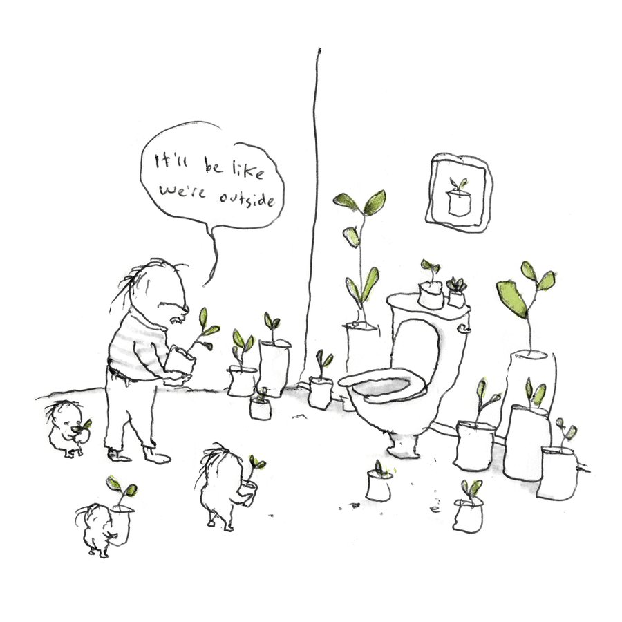
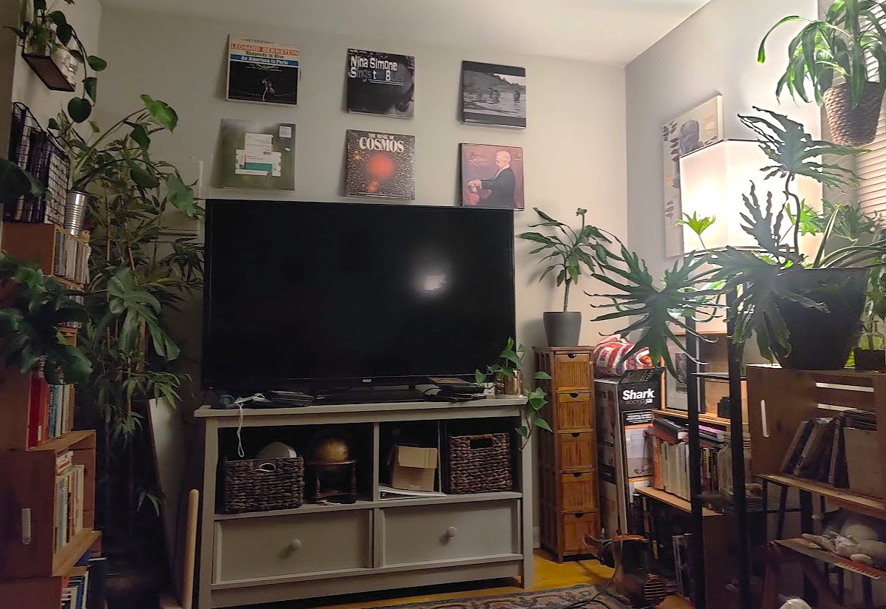

3 facts about me:
- I learned (basic) html, css & javascript for this
- I have a cat, her name is Bug
3 facts about me:
I'm originally from Colmar, France but I did my undergraduate at Northwestern University, north of Chicago. Outside of physics, I am passionate about public transit, reading books while on public transit, public parks, reading books while in public parks, indie movie theatres, my local library, my 2008 Prius, the 6 CDs currently on rotation playing in my 2008 Prius, my cat, and all of the green plants I keep in my home.


left, credit @pants and right, a fraction of all my plants
In reverse chronological order, my recently read list: